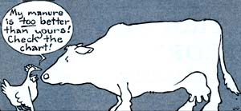
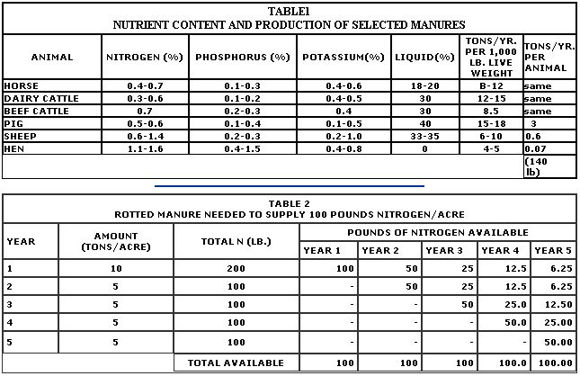
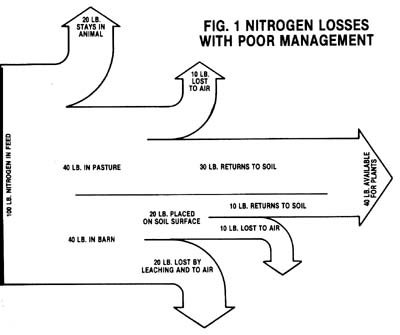

Are you aware that livestock animals in the United States produce as much as two billion tons of manure a year? And did you also know that the fertilizer value, alone, of all this "waste" is close to $10 billion? And that figure doesn't even take into account the worth of the approximately 500 million tons of humus-building organic matter that's also contained in the excrement!
Unfortunately, a lot of the potential agricultural value of manure is lost or wasted ... by either careless handling and storage or inefficient distribution. However, with proper management, it's possible to put back into the soil about 70% of the nitrogen ... 75% of the phosphorus ... and close to 80% of the potassium found in livestock feed!
Farmers have known about the earth-enriching potential of manure for nearly as long as humanity has known about agriculture. Probably the oldest surviving reference to the use of animal leavings in horticulture is found in Mesopotamian clay tablets dating back to about 2000 B.C. Somewhat later, Marcus Terentius Varro-a Roman scholar and writer of the first century B.C.-noted that he considered thrush leavings to be the most potent of all manures ... and later still, in the first century A.D., Lucius Columella concurred with his predecessor about the superior quality of this songbird's droppings. In his book De Re Rustica ("On Farming"), Columella went on to note the excellence of pigeon and chicken manure, as well.
Today, gardening experts generally agree that of all the widely available animal wastes, those of poultry are the richest. But these modern-day commentators often differ about which manure is second best: Some say horse, while others claim cow.
Before we take a closer look at which natural fertilizer does rate next after poultry droppings, it's important to understand just what distinguishes a fine "brand" of manure from an ordinary one. Basically, a potent variety will be rich (high in nutrients) and hot (quick to rot). The economic value of a particular kind will depend upon the amount of nitrogen it contains (phosphorus and potassium content are important as well) ... and upon the fermentation it's undergone.
The nitrogen found in a specific animal's waste will vary with the critter's diet ... age... and workload. For example, since seeds are generally high in nitrogen and grasses low, grain-eaters tend to produce richer manure than do hay-munchers. And mature beasts, whose bodies are fully grown and thus require fewer nutrients, excrete more nitrogen than do rapidly growing youngsters. Finally, livestock that's raised for meat will require less nitrogen than will animals reared for milk ... so steer dung, for instance, is more potent than droppings from dairy cows.
Nitrogen is also important in determining how hot a manure is, because this nutrient promotes the growth of some of the bacteria responsible for the decomposition process. The amount of liquid in the waste, too, affects the speed with which the material rots:
Too much or too little fluid can inhibit fermentation and cause manure to be "cold".
Since cow and pig wastes are both relatively low in nitrogen and high in water content (containing about 30 to 40% liquid), they're considered to be cold manures. On the other hand, horse leavings, with about the same percentage of nitrogen, are classified as hot because they're only 20% fluid. Sheep and hen manures are also hot: Sheep dung is almost one-third liquid, but it's extremely high in nitrogen ... and chicken droppings contain almost no water but are rich enough in nitrogen to counter that dryness.
Table I provides information concerning how much waste different animals produce in a year, and what percentage of nitrogen, phosphorus, and potassium can be found in each of these manures. As you can see, the amount of nitrogen varies quite a bit (from a low of 0.3% in cow dung to a high of 1.6% in hen droppings), while the phosphorus content remains about the same (0. 1 % to 0.4%) for all of the critters except hens (as much as 1.5%). Nor does potassium vary a great deal ... it tends to be 0.4% to 0.6% in the dung of all the animals except sheep ... which produce manure with up to 1.0% potassium.
Of the five barnyard beasts analyzed, pigs are the most "enthusiastic" wastemakers (excreting 15 to 18 tons of manure a year per 1,000 pounds of live weight!), and hens are the "daintiest" (only 4 to 5 tons per 1,000 pounds). The amount of dung "manufactured", however, doesn't always have much to do with how useful it is. For instance, the porker product-pound against pound-is only half as rich as are chicken droppings.
In order to get the most fertilizer value out of manure (whichever animal is the sour
it's important to understand what happens to the substance during the various stages fermentation and handling. Fig. I shows extreme (but not, unfortunately, uncommon
example of what might occur in the nitro cycle of waste on a farm where livestock r half their time in the barn and the other half in pasture ... and where the barnyard nure is poorly managed.
For every 100 pounds of nitrogen in feed, about 20 pounds will stay with the animal ... while the other 80 pounds will be excreted (in our example, half will fall on the dairy floor and half in the field). About 30 pounds of the nitrogen in the pasture-dropped manure goes back to the soil, while the rest is lost to the atmosphere (in the form of ammonia or free nitrogen). Meanwhile, back at the barn, another 20 pounds of the nutrient is lost through leaching and volatilization ... because of sloppy storage.
In this example, further losses result when the mismanaged barnyard waste is spread on the top of the garden rather than worked into the soil. This procedure accounts for the disappearance of another 10 pounds of nitrogen. The end result is that only 40 of the original 100 pounds of nitrogen is actually returned to the soil.
Since (as noted above) about 20% of the nitrogen an animal ingests stays with the creature, the waste must be handled carefully in order to get use out of as much of the other 80% as possible. Here are four ways in which soil nutrients can escape, and some suggestions for stopping them from doing so.
[11 Loss of nutrients in urine. The urine of most animals can contain from one-half to two-thirds of the total amount of giveaway nitrogen, and about 60 to 80% of the available potassium. In pasture, of course, this liquid just soaks into the soil, so there's no significant loss there. To save urine in the barn, however, use bedding to absorb it. Then, when the straw (or what have you) is wet, heap it all into storage piles.
[2] Scattering. This occurs when waste is dropped carelessly in the barnyard or on uncultivated ground (such as woodlots). To prevent nutrient depletion through scattering, shovel up any barnyard "mishaps" into a managed manure pile, and fence animals out of uncultivated areas.
[3] Leaching. This is nutrient loss resulting from percolation of rainwater through manure or from surface-water runoff. The
best way to prevent leaching is either to work fresh dung immediately into soil where it's needed ... or to store it in covered watertight pits. If you keep the material in the open, heap it on a level or a slightly concave surface with a clay or concrete base (to prevent seepage of juices into the soil). Make your manure pile high enough so that rain can't soak through it, and slightly concave on top to catch water. Then cover it with a thin layer of sawdust or topsoil if you plan to let it stay around for a while.
[4] Volatilization. As animal waste ferments, gaseous ammonia and-under certain circumstances-free nitrogen can form and escape into the atmosphere. The best way to prevent these losses is, again, to add a protective layer of topsoil or sawdust to the manure pile.
Manure can be incorporated into soil when it's in one of three stages: fresh ... rotted (partially composted) ... or fully composted. If worked into the ground when raw, animal waste is least likely to lose any of its valuable nutrients, but it's also very heavy to handle in its uncomposted form, and sometimes too rich to be useful to plants. In fact, some fresh droppings (those of horses and chickens, for example) are so rich in raw nitrogen that they can bum tender young vegetation. Therefore, it's a good idea, if possible, to store manure for several months prior to using it ... to give it a chance to ferment. (You could also plow the material into your garden in the fall, so that it'll have time to compost prior to spring planting.)
Rotted manure will be about half its original weight ... which means-in turn-that, its nutrients are more concentrated: A ton of rotted excrement is about twice as rich as is a ton of fresh droppings. Fully composted manure is only one-eighth its original weight, and therefore eight times as rich ... but complete composting of animal waste is an expensive and timeconsuming process.
Before you reach for the shovel and the hoe, anxious to put your barnyard "vegetable vittles" to work, there are a few last-minute questions you ought to know the answers to. [1] How do animal fertilizers compare with manufactured ones? [2] How fast does manure release nutrients into the soil? [3] Finally, how much animalproduced plant food will various crops need?
To begin with, you can assume that a ton of manure is roughly equivalent to 100 pounds of packaged fertilizer. For example, 1 ton of fresh horse or steer leavings (with bedding)which contains about 10 pounds of nitrogen, 5 pounds of phosphorus, and 10 pounds of potassium-is more or less equal to 100 pounds of commercially made 10-5-10 soil supplement. On the other hand, 2,000 pounds of dairy cow or pig excrement is slightly less nutritious ... while the same amount of poultry droppings (equaling about 100 pounds of 25-15-10 fertilizer) is a great deal more valuable. And keeping in mind that rotted waste is twice as potent as raw, 1 ton of fermented equine or bovine manure is comparable to 100 pounds of 20-10-20.
As to the rate at which chemicals are released into the ground, the general rule is that most manures let go about half their "vitamins" during the first year ... around 25% the next ... close to 12.5% the third ... and so on. Two exceptions, both of which release the bulk of their nutrients within the initial 12 months, are cow dung (75%) and hen droppings (about 90%).
To get an idea of how much rotted waste needs to be added to an acre of land each year in order to keep the soil supplied with 100 pounds of nitrogen, look at Table 2. As you can see, 10 tons of partially composted manure is needed the first year and only 5 per acre during each of the next four years. The reason is that nitrogen is released slowly, so part of the earlier application will be available for use in succeeding years.
Of course, the amount of manure that needs to be added to soil will also depend upon the crop being grown. For instance, hay and pasture grass need only 1 to 3 tons of rotted waste per acre (and only 1/2 to 1-1/2 tons for legumes), while corn requires 6 to 10 tons, and leafy green vegetables like 5 to 15 tons per acre (or 25 to 75 pounds per 100 square feet).
However, be careful! Too much manure can prove harmful. The application of more than 6 tons of fresh poultry droppings to an acre of sandy soil, for example, has been known to increase nitrates dangerously in ground water ... and the addition of more than 4 or 5 tons an acre of any rotted manure on land maintaining hay or cereal crops can cause "lodging" (the matting of the grasses on the ground because the stalks have been weakened by too much nitrogen). Also, root crops (such as beets) don't need quite as much nitrogen as do leafy vegetables ... and if overdosed with manure, they can become leggy and lose some of their sugar content.
All things considered, though, animal waste is about the most economical (not to mention abundant!) natural fertilizer there is. But it must be carefully managed! So go ahead and grab that old shovel ... get out in the fresh spring air ... and start making the most of your critters' manure today!
|
 |
 |
 |